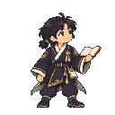
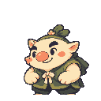
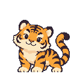
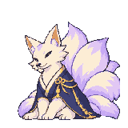
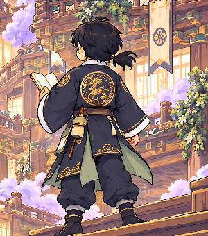
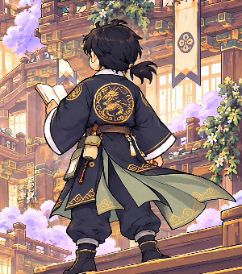
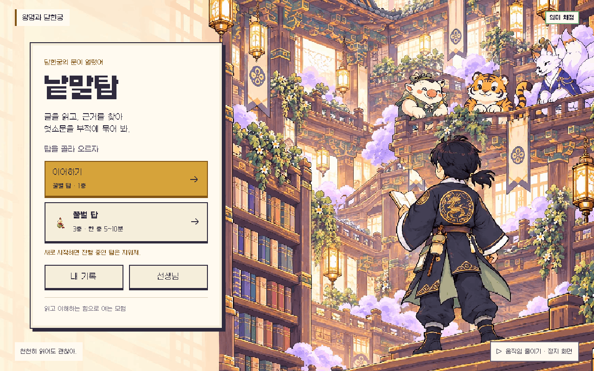
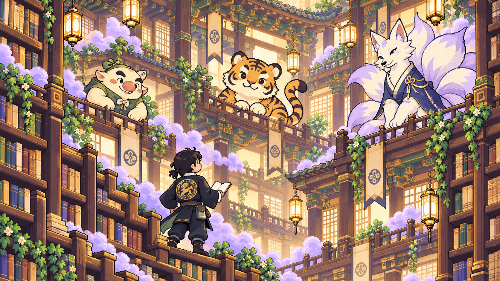
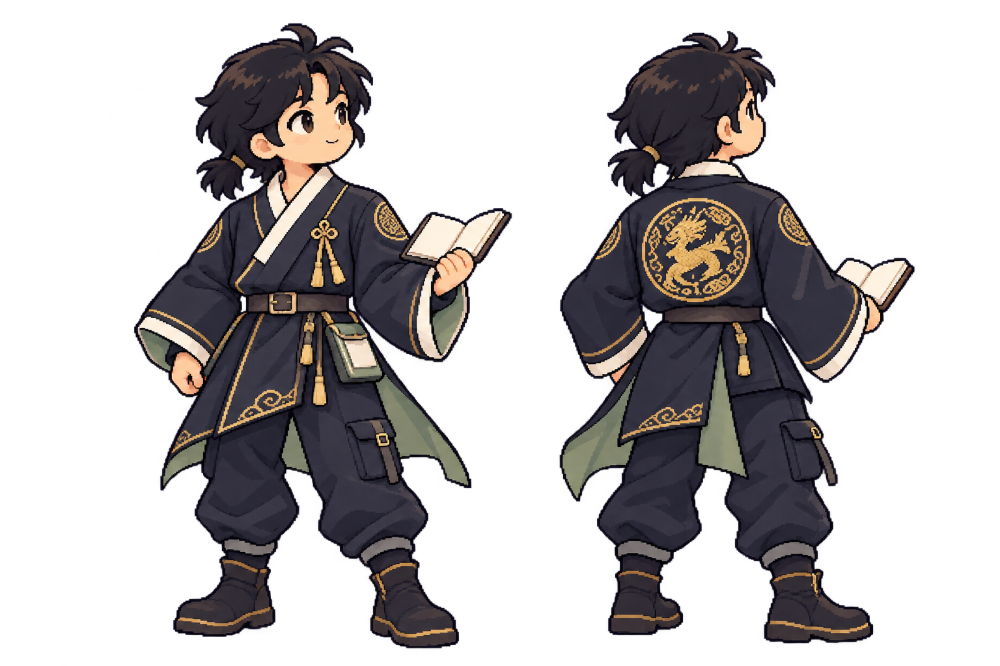

1. 어느 장면의 어느 그림?
18장면·36캡처 위의 번호를 눌러 봐. 옆에 ID·한글 이름·크기·상태가 있어. 맨 아래에는 현재 시트 72프레임이 따로 있어.
장면 보드 열기낱말탑 · 2026-10-22 · 요청6 개정 2판
이 파일에서 시작하면 돼. 장면마다 그림이 들어갈 자리와 현재 그림을 보고, 한글 이름이나 ID로 고칠 곳을 알려 줘.
최신: 요청7 조각 정리판. 캐릭터·봉인·아이콘·카드틀 9장, 총72프레임이야. 아래 동작모음과 실제 프레임을 검토해 줘.
키아트와 같은 얼굴·복식으로 다시 만들었어. 아래 이름을 누르면 모든 동작을4열로 볼 수 있어. 생성 프롬프트는 생성원본/에 있어. 무거운 생성 PNG·원본 영상·이전판은 컴퓨터에만 보관하고 Git에서 뺐어.




18장면·36캡처 위의 번호를 눌러 봐. 옆에 ID·한글 이름·크기·상태가 있어. 맨 아래에는 현재 시트 72프레임이 따로 있어.
장면 보드 열기추천은 일반128px·여우160px, 1배, 음영3단계·24색이야. 새 검토 그림은128·160px 마스터야. 현행 게임은 배치 변경 없이64·80px 호환 사본을2배로 표시해.
스타일 비교 크게 보기규칙·불규칙만 따로 보고 진폭·주기를 바꿔 봐. 새 눈·귀·머리·옷자락 프레임으로 재생해. 게임의 불규칙 일정 연결은 별도 구현이야.
움직임 시험하기기존 영상은 재생돼도 옷자락이 거의 고정돼 있었어. 이번에는 옷자락 두 자세를 지정해 다시 생성했어. 재생을 누르면 펼쳐졌다 돌아오는6초 반복을 볼 수 있어. 720p·1.76MB로 줄였고 첫·끝 프레임도 같아.


정리·압축까지 끝난 실제 게임 화면이야. 이어하기·탑 선택·내 기록·선생님 버튼을 유지했어.

이 두 그림의 분위기·검은 머리·현대 한복 복식은 유지하는 기준이야. 새 게임용 동작 시트와 구분해 뒀어.


호리병 봉인3단계·기능 아이콘12종·카드 표식6종·카드틀도 같은 원화 기준으로 다시 생성했어. 카드틀은 현재 게임에서 쓰지 않는 에셋이야.
“뒤섞는호랑이-대기: 눈 옆 검은 줄무늬를 줄여 줘” 또는 “EN-tiger-idle: 눈이 더 잘 보이게”처럼 알려 줘. 이 폴더의 수정요청.md에 적어도 돼.